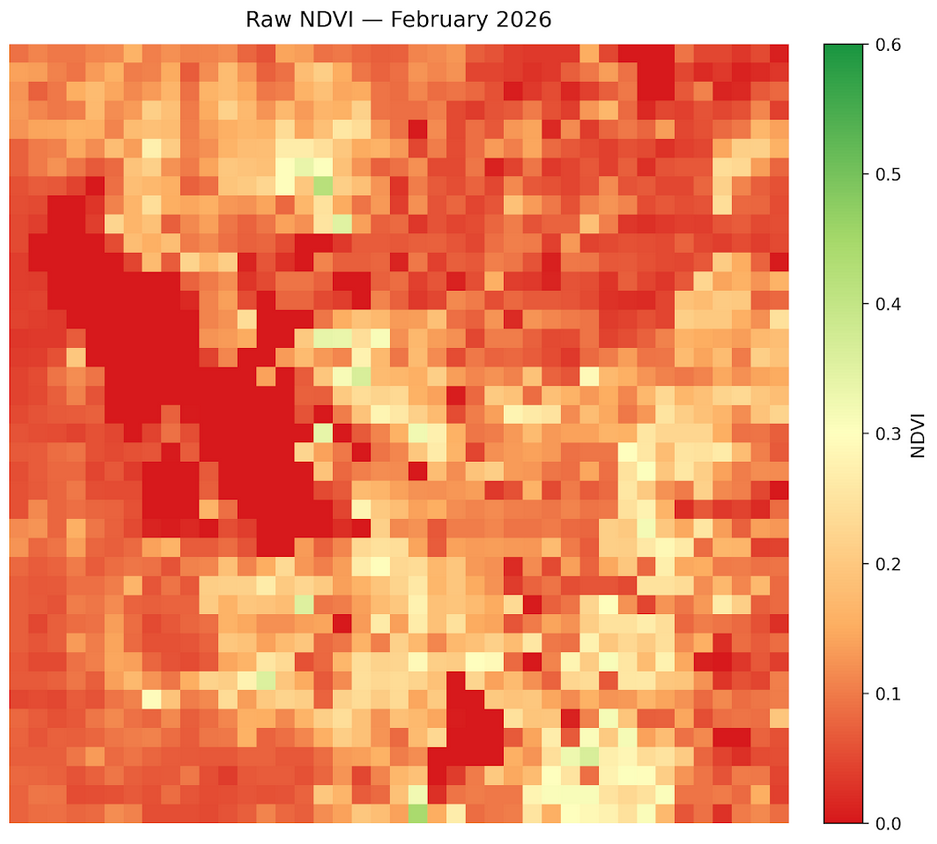
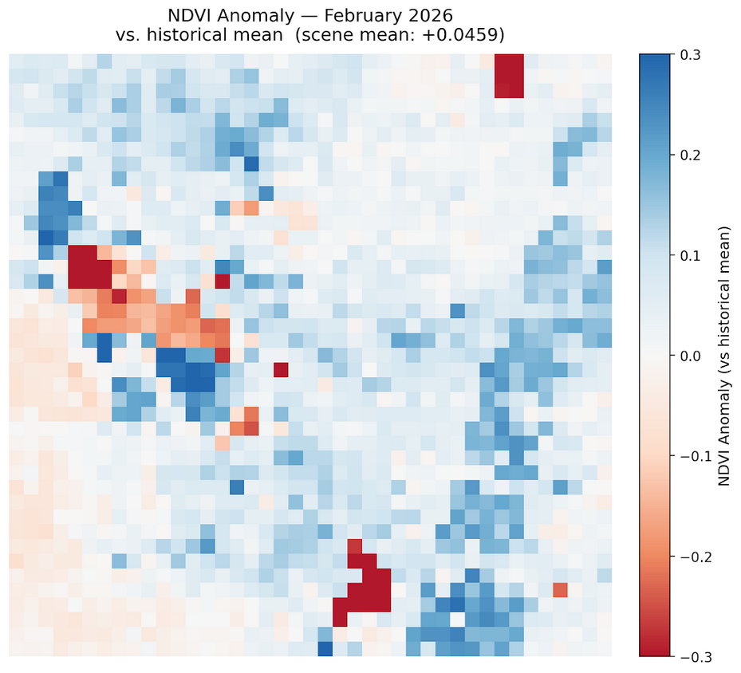
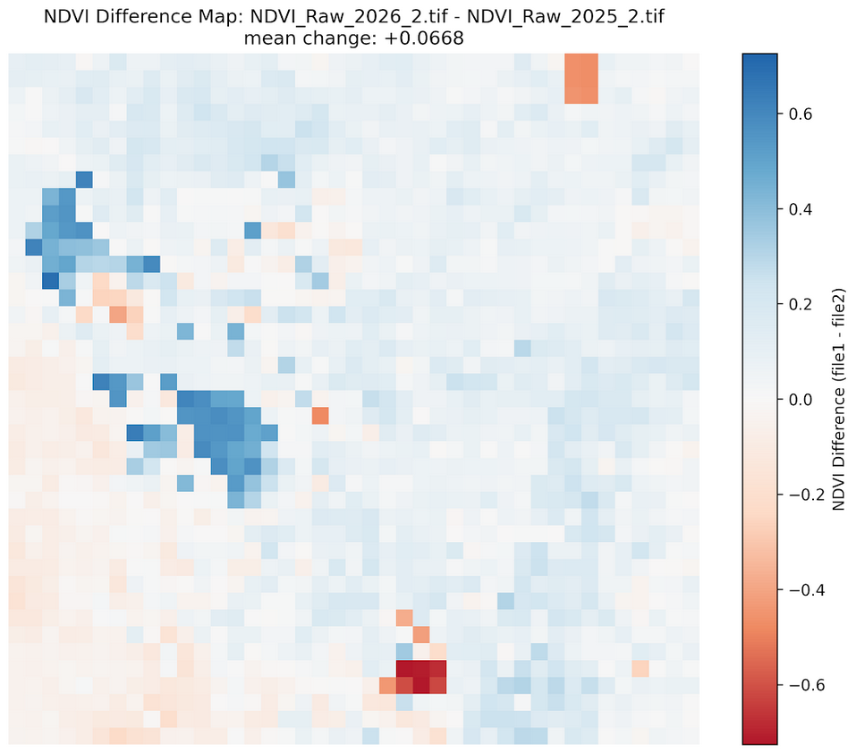
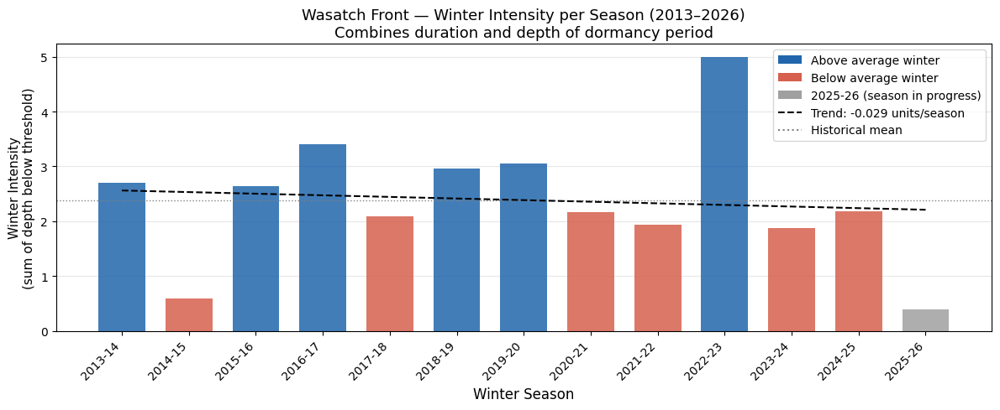
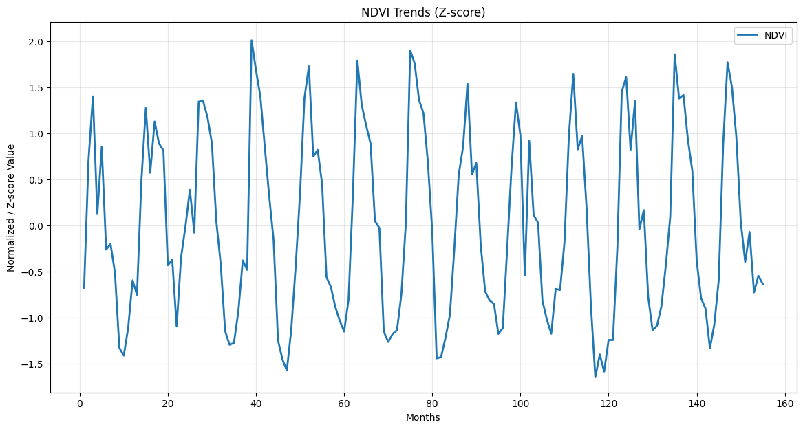

Monthly Report · Issue 03
February 2026
Vegetation dynamics across the Wasatch Front
By Scott Vars
Vegetation dynamics across the Wasatch Front
By Scott Vars
Raw vegetation index across the Wasatch Front for February 2026. Much of the Wasatch Front lay within the 0-0.3 range, with small, individual outliers at upwards of 0.4. The lake values (Great Salt Lake and Utah Lake), are both at 0 as normal. Winter NDVI values are inherently low across the region, however, the meaningful signal lies not in absolute values but in how this month compares to the historical record and to adjacent months.

NDVI was anomalously high for February 2026, with an average increase in NDVI of about +.046. This is quite an increase from last February, showing higher-than-average vegetation. This change is especially pronounced in the mountainous regions in the East, while we saw a slight decrease in vegetation in the more arid region West of the Great Salt Lake.
The increase is likely driven by snowmelt exposing underlying vegetation rather than new plant growth. Snow suppresses NDVI by masking ground cover and as it melts, readings rise even with no ecological change. The slight decrease in vegetation around the Western, lower-elevation area shows stressed vegetation possibly due to drought.

NDVI decreased slightly overall from January to February, with the most significant losses in the more arid regions West of the Great Salt Lake. While lower-elevation areas showed the most pronounced losses in NDVI, there also seemed to be a significant loss in the Northern parts of the Wasatch Front including the mountainous areas surrounding Brigham City and Hyrum. However, we did see minor gains in NDVI from January in other mountainous areas throughout the Wasatch Front. This could be due to some areas receiving snow during February while others didn't exposing the vegetation. Specifically, the Northern part of the Wasatch Front with cities such as Brigham City and Hyrum received a major storm around February 18-19 with about 8 inches of snow. This likely masked vegetation, decreasing the NDVI over that region. However, the increase in vegetation around Utah lake is likely due to the long lasting snow drought, as they did not receive much snowfall at all in February 2026. This is likely cause for a green up of the surrounding wetlands and a possible early spring, leading to a contrast between the northern and southern vegetated areas of the Wasatch Front.
The decrease in NDVI in arid regions is likely due to a period of drought and low moisture recharge, while areas such as Brigham city decreased heavily due to increased snowfall and masking of vegetation. However, Utah Lake and surrounding areas increased in vegetation due to an early green-up and lack of snow.

The sharp increase over the actual lake area of the Great Salt Lake and the sharp decrease upon the Utah Lake area are likely due to remote sensing artifacts, so please disregard. They are likely not real readings and when looking at the raw NDVI maps, they did not change at all.
Compared to February 2025, mountainous and natural regions show higher NDVI in 2026, while the lower-elevation areas show a slight decrease. This divergence is the more telling signal, as we can see a lack of snow in the mountainous regions compared to last year, exposing much of the vegetation as explained above.
Higher mountain NDVI in 2026 does not indicate healthier vegetation, it reflects less snow cover. Bare dormant ground reads higher than snow-covered ground. This is a snow drought signal masquerading as greenness.

Now that the winter is coming to an end, we can take a look at the actual winter analysis to see how this winter shapes up historically. There are many ways to analyze a winter's performance, but keeping with the NDVI analysis theme, we know that NDVI dips significantly in winter months, so we can analyze how low NDVI goes during winter as a measure of performance. The way this was done in this graph was we measured the sum of the z-scored NDVI values (to account for anomalies rather than raw scores) below a certain threshold (-0.5) which we considered a "winter" month. We can see this is a pretty good indicator, as it is able measure anomalously below-average winters, such as 2014-15, and anomalously high winters, such as 2022-23. Our current winter is extremely low comparative to others, not falling very much below the threshold at all. Although the season is not over yet, unless a lot of snow were to come in March, that value will not likely grow much more.


February 2026 showed a clear NDVI decrease from January 2026, particularly in the arid areas, driven by drought and stressed vegetation, while the mountainous areas of the Wasatch Front exposed vegetation due to lack of snow rather than actual new plant growth. Compared to February 2025, mountain regions appear largely greener and even the Salt Lake Valley region increased slightly, while Western regions slightly decreased due to snow drought conditions. Additionally, this February was anomalously vegetated compared to historical Februaries, suggesting a possible early green-up
The February increase once again highlights how winter NDVI is dominated by snow cover dynamics rather than vegetation health. Anomalously high mountain and overall NDVI in February 2026 should be read as a warning signal of an early spring due to snow drought, not a positive indicator.
NDVI values derived from Landsat 8 TOA median composites at 5.5km resolution. Difference maps computed from raw NDVI prior to any normalization. Historical comparisons use the 2013–2026 Landsat archive.
Landsat 8/9 imagery courtesy of the U.S. Geological Survey via Google Earth Engine.
NOAA National Centers for Environmental Information, Monthly Climate Reports and drought summaries.